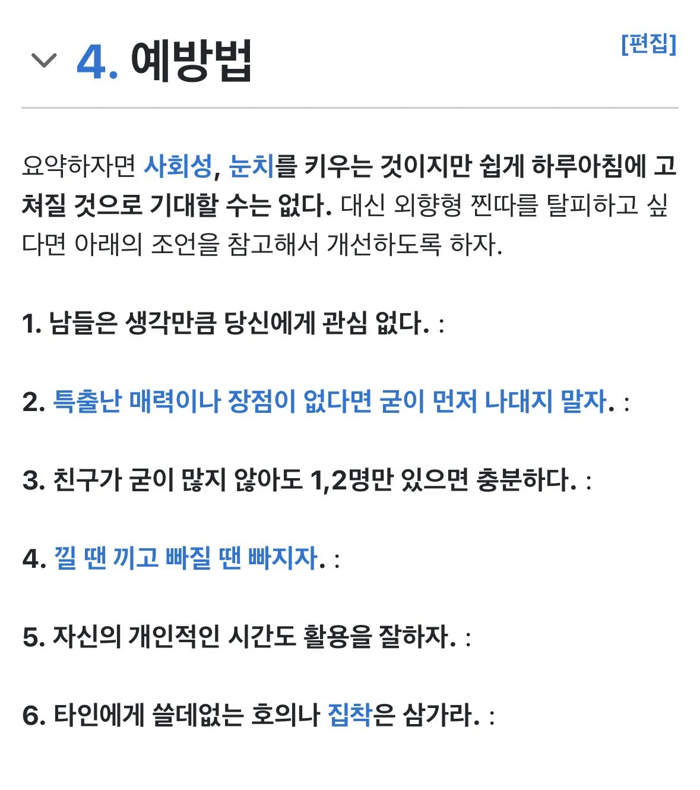

- 출처 : 나무위키 - 외향형 찐따 (https://namu.wiki/w/%EC%99%B8%ED%96%A5%ED%98%95%20%EC%B0%90%EB%94%B0)

- 출처 : 나무위키 - 외향형 찐따 (https://namu.wiki/w/%EC%99%B8%ED%96%A5%ED%98%95%20%EC%B0%90%EB%94%B0)
사람에게 해서는 안될! 최악의욕설!
시발... 글내려... 제발...
6번 중요함 다른사람들이 너의 호의에 반드시 답해줄 의무는 없다 집착하지마라
저거 다 가능한사람 생각보다 적을껄 전국민을 찐따로 만들셈이냐
캬 진짜 피와 눈물로 씌여졌겠네 ㅋㅋㅋ
1번 극복하느라 힘들었지 ㄲㄲㄲ
나대지 말자만 지켜도 충분하다
내가 외향형 찐따를 사회생활하면서 몇 명 봤는데
제일 큰 문제가 낄끼빠빠라는게 학습이 되는 영역이 아니다 보니 개선이 안됨
부하 직원 중에서도 있어서 술자리에서 얘기도 해봤는데 지도 잘못하는 건 알고 있더라
얘땜에 회식도 요새 안함 빼놓고 하자니 또 따돌리는 것 같아서 미안해가지고
하기사 그거 학습이 안되더라...왜그럴까
한번씩 안쓰러움 ㄹㅇ
옆에서 보면 망망대해에서 바닷물 마시는거 같음
관심 갈구 -> 내상 -> 더 깊은 갈구 -> 조급함 ->
내향형 인싸가 궁금해지네
방송전 기안같은 느낌이 아닌가 싶네
난 내향형 찐따인데 남들이 나한테 관심 없는 만큼 나도 관심 없음, 난 내가 병신인 거 거 앎, 친구는 1명 있음, 1년에 1, 2번 연락함, 내 사람 아니면 죽든 말든 알빠노고 내 사람이면 로또 20억 당첨되면 1억 줄 수 있는데 더 필요하면 더 주고
ㄹㅇ 호의에 집착하는거 뭔지 알거 같음. ㅈㄴ 피곤함 저거
찐따 문서 많이 개선됐네 예전엔 진짜 피눈물과 여드름으로 쓰여진 논문이었는데